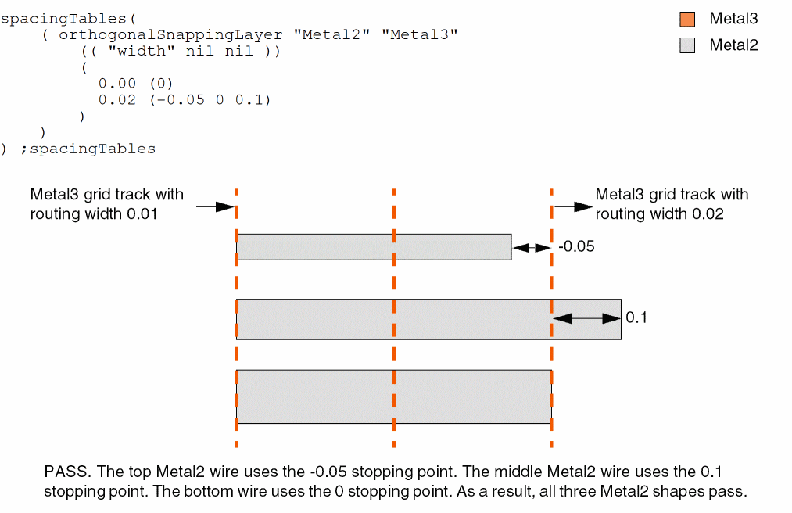

orthogonalSnappingLayer
spacingTables( ( orthogonalSnappingLayertx_layer1tx_layer2(( "width" nil nil ) ['upperLineEndStoppingPointsg_upperTable] ['mask1 | 'mask2 | 'mask3] ['otherMask1 | 'otherMask2 | 'otherMask3]l_defaultRanges)g_rangeTable)
) ;spacingTables
(Virtuoso Advanced Node for Layout Only) Specifies the stopping points to align end-of-line edges on layer1 with the routing grid on layer2, based on the widths of the routing tracks. The routing grid on layer2 can be specified using a number of ways, including track patterns, snapPatternDefs, and widthSpacingSnapPatternDefs. Both layers must have orthogonal direction.
Values
|
The first layer on which the constraint is applied. The constraint applies to the line-end edges on this layer. Type: String (layer and purpose names) or Integer (layer number) |
|
|
The second layer on which the constraint is applied. The line-end edges on layer1 need to align to the grid on this layer. Type: String (layer and purpose names) or Integer (layer number) |
|
|
The format of the rangeTable row is as follows:
Type: A 1-D table specifying a list of floating-point distance |
|
Parameters
|
Each entry in the table specifies stopping-point distances for the right and upper edges of the shapes on layer1; the constraint value specifies the stopping point distances for the left and lower edges of the shapes on layer1. If this parameter is not specified, the constraint value applies to all edges, lower and left and upper and right.
Type: A 1-D table specifying floating-point distance |
|
|
The stopping-point distance values to be used when no table entry applies.
Type: A list of stopping-point distances |
|
Example
The end-of-line edges of Metal2 shapes must stop as follows:
- At a distance equal to 0 from the centerline of the track if the width of a routing track on Metal3 is greater than or equal to 0.0.
-
At a distance equal to -0.05, 0, or 0.1 from the centerline of the track if the width of a routing track on Metal3 is greater than or equal to 0.02.

Return to top